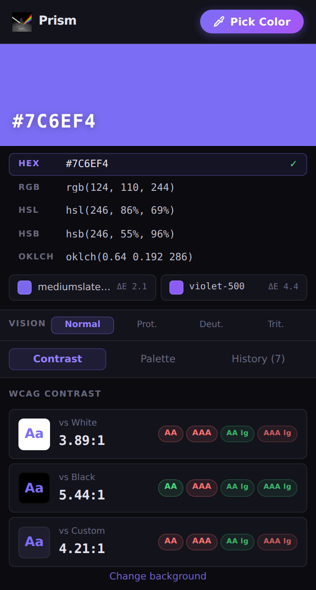
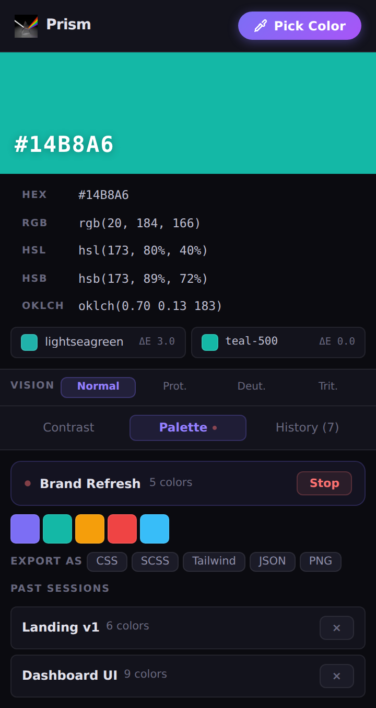
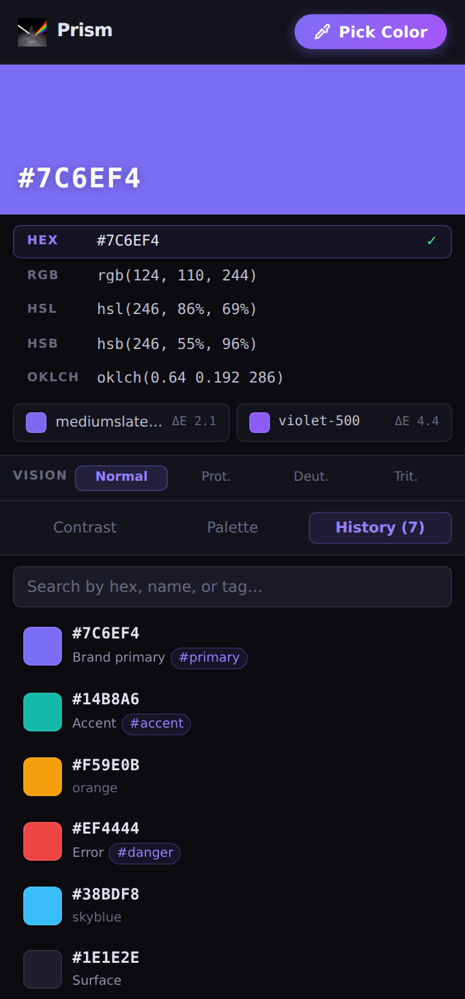

Grab any colour on your screen, instantly.
Prism is a lightweight eyedropper for designers and developers. Sample any pixel, copy it in five formats, check contrast, and build palettes — all from one tidy popup.

One pick, every format you need
Click any value to copy it to your clipboard. No retyping, no conversion tools.
Everything a colour needs, in one popup
Built for the moment you spot a colour you want — and the ten things you do with it next.
Copy in five formats — and check contrast
Every pick is instantly converted to HEX, RGB, HSL, HSB and OKLCH, with the closest CSS and Tailwind colour named for you. Then see live WCAG results so you know it's readable.
- One-click copy for any format
- Closest named CSS colour and Tailwind class, with ΔE distance
- WCAG AA / AAA badges vs white, black, or a custom background

Build palettes, then export them anywhere
Start a session and every colour you pick is appended automatically. When you're done, export the whole palette in the format your project already speaks.
- Record live palette sessions as you work
- Export to CSS variables, SCSS, Tailwind config, JSON, or a PNG swatch sheet
- Revisit and re-export past sessions any time

A searchable history that remembers everything
Every colour you pick is saved locally. Label and tag them so "that perfect purple" is a search away — never a re-pick.
- Automatic local history of every pick
- Custom labels and #tags per colour
- Search by hex, name, or tag
- Colour-blindness preview — Protanopia, Deuteranopia & Tritanopia
Pick your first colour in seconds
No sign-up, nothing to configure. Install and go.
Open Prism
Click the Prism icon in your toolbar — or press Alt+Shift+C to launch the eyedropper directly.
Point & pick
Hover anywhere on screen and click. The magnifier loupe helps you land on the exact pixel.
Copy or check
Grab any format with a click, or switch to the Contrast tab for instant WCAG results.
Collect & export
Record a palette session and export to CSS, SCSS, Tailwind, JSON, or PNG.
Ready to grab your next colour?
Free, open source, and private by design. Add Prism to Chrome in one click.
Your colours never leave your device
Prism makes zero network requests. There's no backend, no telemetry, and no third-party anything. Every pick, palette, and setting lives only in your browser's local storage.
Read the privacy policy